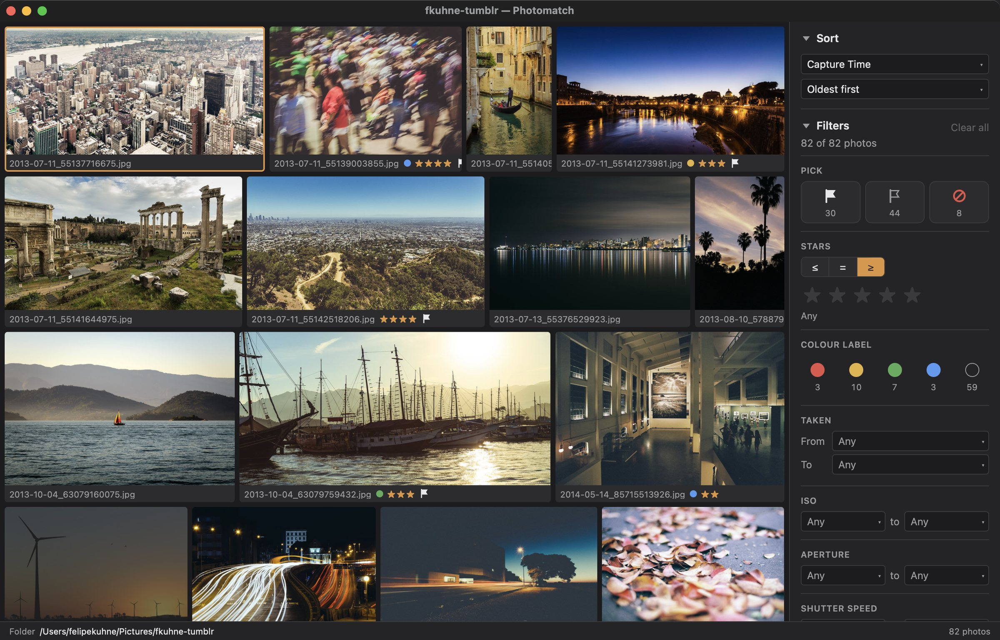
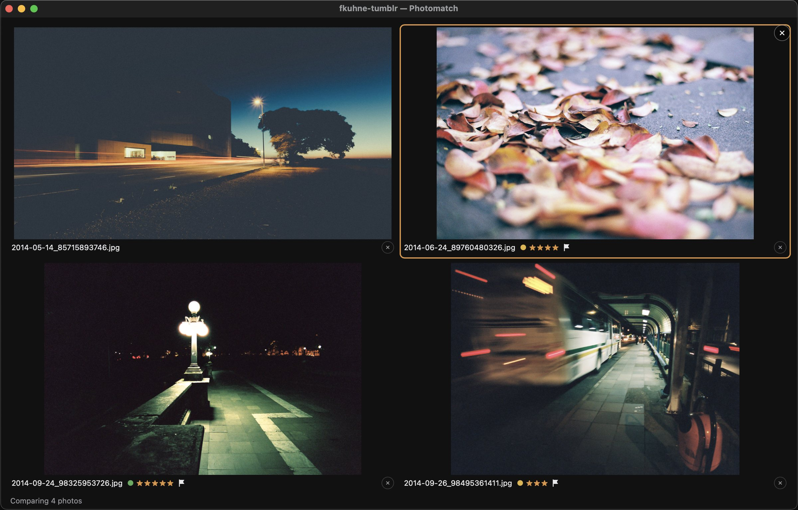

PhotoMatch opens a folder of RAW photos in a fast grid, lets you pick, reject, star and label them from the keyboard, and hands your choices to Lightroom and Capture One. It never changes your photos, and nothing leaves your computer.
Made for RAW files, from some 1,300 cameras and phones of over 80 makers, and DNG. JPEG, PNG, WebP, TIFF, BMP and GIF open too, and HEIC and AVIF, on Windows with Microsoft's extensions.
Free while in beta. Not signed by Apple or Microsoft yet, so the first launch takes one more click: see how.

Everything you need to cull a shoot before you import it, with your hands on the keyboard.
Thumbnails come from the previews your camera already stores, so a folder of thousands opens fast. Each keeps its photo's shape, and + − make them larger or smaller.
The photo view is as sharp as your screen. A click zooms in where you clicked, as far as the photo's full resolution, to check focus on an eye; Ctrl or ⌘ with the mouse wheel, or a pinch, zooms by steps.
P picks, X rejects, 1–5 give stars and 6–9 colour labels, on one photo or a hundred at once. ⌘Z or Ctrl+Z undoes.
Similar frames side by side, zoomed and moved together. Pick the one, and the others step aside.
Sort by capture time, stars, pick or label. Filter by date, camera, lens, ISO, aperture, shutter speed, focal length, your tags and more.
Split the grid by day, month, place, camera, lens or focal length, each section named and counted. Places are named on your computer, offline.
Tag a shoot “Rafa & Pam Wedding” or “Travel > Portugal > Lisbon”, on one photo or a hundred, and filter by them. Lightroom Classic gets them as keywords.
Your picks, stars and labels are saved as you go, in an XMP file beside each RAW file, where Lightroom Classic and Capture One read them. Your tags go there too, as Lightroom's keywords.
Settings → Text size makes all of PhotoMatch's text larger, up to 200%, for a 4K display. The photos stay as they are.
PhotoMatch is free while it's in beta. If it saved you an evening of culling, a donation helps the next features get built, starting with one that learns your taste.
Sponsor on GitHubNot in a position to donate? Problems and ideas help just as much.
Select them and press C. Up to four show side by side; a click zooms every one at the same spot, and dragging moves them together.

PhotoMatch only reads your files. Ratings and tags go into the XMP file beside a RAW file, keeping whatever else Lightroom wrote there.
No account, no cloud, no upload. PhotoMatch works offline and never connects to the internet, not even to check for updates.
RAW files from some 1,300 cameras and phones, from Canon, Nikon, Sony and Fujifilm to Leica and Hasselblad, and DNG. JPEG, PNG, WebP, TIFF, BMP and GIF too, and HEIC and AVIF, on Windows with Microsoft's extensions. A RAW shot with a JPEG shows once.
The beta is the start. Later versions will look at the photos themselves, on your computer, and help you choose.
It shows you two photos, and you pick one. Every pick teaches it your taste, not a generic idea of a good photo, and it ranks the rest of your library by it.
Blur, closed eyes and bad exposure, found for you, and the best one or two frames of a burst set apart.
Type "foggy street at dusk" or "kid laughing", or ask for photos like this one, across your whole library.
Plans, not promises: what comes first depends on what testers tell us.
PhotoMatch isn't signed by Apple or Microsoft yet, so your computer asks you once to confirm you trust it.
Apple silicon: M1 or later.
64-bit Windows.
To update, download the new version and install it over the old one; your ratings and settings stay. Every version is on the releases page.
This is a beta, and things may break. Open an issue: say what you did, what you expected and what happened, with your computer and its system. Help → Diagnostics in PhotoMatch shows what it measured; copy its text into the issue.